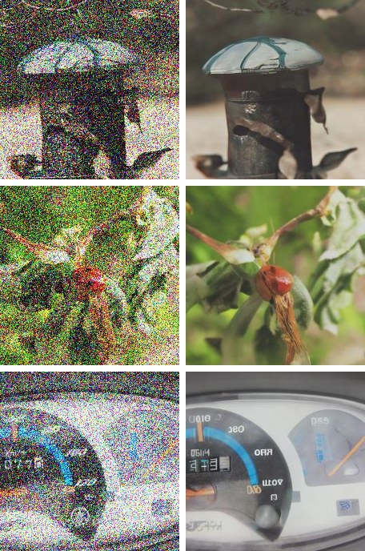

INFERENCE RECORD / NOT A REPRODUCTION
对齐后的模型确实更强，
但集成被弱源拖低。
100 对 gaussian_noise severity 5（ImageNet-C 与 C-Syn 配对），ConvNeXt-B 官方 finetuned 权重：预训练模型看原图 36.0%，finetuned 模型看合成图 60.0%，logits 相加 52.0%。走的是 eval-only 路径——用官方发布的 C-Syn 配对代替「目标图经无条件扩散适配」那一步，因此不是完整的三阶段流水线。
跑了什么
三个设置共用同一个评测脚本：（1）--ensemble first，预训练 ConvNeXt-B 跑 ImageNet-C 原图（source-only）；（2）--ensemble second，官方 finetuned 权重跑 C-Syn 合成图；（3）--ensemble sda，两者 logits 相加（论文的最终预测形式）。数据为 10 类 × 10 张 = 100 对，配对相关系数 0.982、随机错配 0.077。
环境与改动
python 3.8、torch 2.0.1+cu118、torchvision 0.15.2+cu118、mmcv-full 1.7.2（cu118/torch2.0 预编译轮子）、mmcls 0.25.0、mmengine 0.10.7（finetuned 权重的 pickle 引用它，缺它 torch.load 直接 ModuleNotFoundError）、setuptools<70。代码零改动，但必须在 code/eval/ 目录下运行（custom_imports 用的是裸模块名 imagenet/evaluation）。
数据获取：ImageNet-C 的 noise.tar（22.5 GB）用 wget | tar -xz --wildcards gaussian_noise/5/* 流式读取，收满 1608 张即停（落盘仅 64 MB）；C-Syn 从 Google Drive 下 5.15 GB（765031 个成员）后只解 gaussian_noise/5（50000 张，654 MB）。清华云盘 share 的 API 已 404。两个子集各自建满 1000 个类别空目录，保证标签是 ImageNet 索引而不是 0–9。
结果
| 设置 | top-1 | top-5 |
|---|---|---|
| 预训练模型 on ImageNet-C（source-only） | 36.0% | 70.0% |
| finetuned 模型 on C-Syn | 60.0% | 83.0% |
| SDA（logits 相加集成） | 52.0% | 83.0% |
论文 Table 4 同一损坏（ConvNeXt-B、全 50000 张）：Source 48.0 / DDA 59.9 / SDA 60.3；Table 3 的 15 域平均 Source 45.6 / DDA 49.4 / SDA 51.9。我们 100 张的 source 36.0 与 48.0 差得多（子集只覆盖 10 类，95% 区间约 ±9），SDA 52.0 也低于 60.3，属于小样本波动。
可复现的方向：source→合成域 36.0→60.0 的大幅提升与论文的定位一致；反向的地方：source 只有 36.0 时集成（52.0）低于纯合成域（60.0），说明「把弱模型的原图 logits 平均进来」在源模型已崩的域上会拖后腿——论文的 15 域平均掩盖了这种单域反向。
耗时：100 张评测约 1.1 秒（91 task/s，batch=100）。
样例

sda/out/atlas/mk.py 按文件名配对拼接，未做增强。没跑的部分与局限
- 不是完整流水线：没有跑无条件扩散改目标图那一步，直接用 C-Syn 当「适配后的合成图」；SDA 那一行是近似。
- 没跑微调：使用作者发布的 finetuned 权重，没有重做 50K 合成数据 + 15 epoch 的 MoD 过程。
- 小样本：100 张、10 类、1 种损坏（15 种中的 gaussian_noise）。
- 没有 DDA 对照：未在同一 100 对上手跑 DDA，因此「SDA > DDA」只能引用论文数字。
- 没跑其他骨干与任务：ResNet-50、Swin、CIFAR-10-C、VOC、LLaVA 全部未复现。
- 没跑 ImageNet-W 与 UniTTA 数据流：论文 Table 5/9 未涉及。
文件位置
| 路径 | 内容 |
|---|---|
/data1/kxchen/infer-repro/sda | 官方代码 @ d46a9c6、环境（env/）、权重（ckpt/） |
.../sda/data/ImageNet-C-small | 100 张原图（gaussian_noise/5/<wnid>/） |
.../sda/data/ImageNet-C-Syn-small | 100 张配对合成图（同文件名） |
.../sda/out/atlas/repro.jpg | 本页样例拼图（服务器生成后 scp） |
.../sda/RECORD.md | 本页数字的出处 |
来源
- SDA 论文（arXiv:2406.04295）与官方仓库、官方 finetuned 权重（Google Drive）。
- 数据：ImageNet-C（Zenodo noise.tar）、ImageNet-C-Syn（官方 Google Drive zip）。
- 本页数字全部取自服务器评测输出与
RECORD.md，样例图由两个数据目录的同名文件拼接。